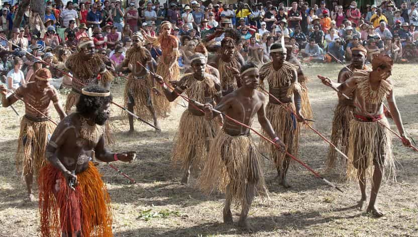
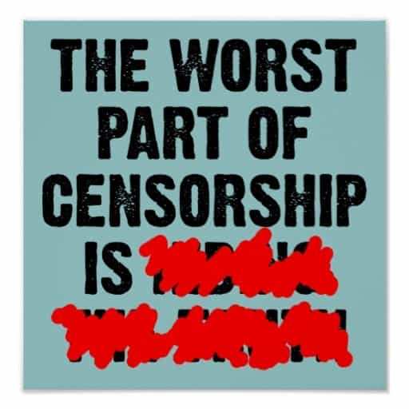
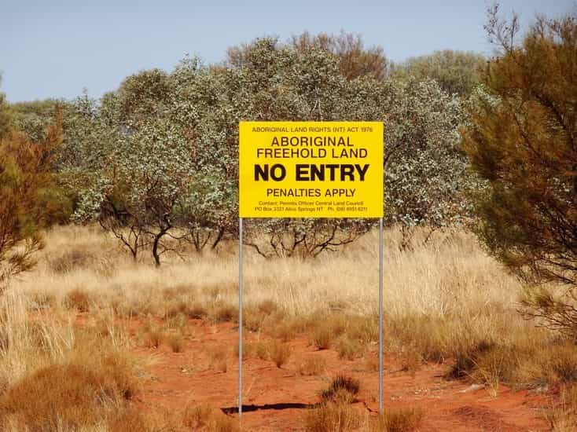
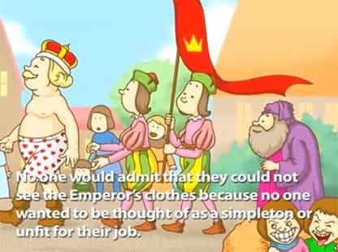

Ned is an intellectual bushranger. He has spent the past ten years in the leftist corridors of Australia’s universities and civil service and he’s had enough.


Australia’s native aboriginal lobby is highly influential. I use the term “lobby” deliberately because it consists of organised individuals and groups and many of its members are not aboriginal themselves.
There are lawyers, politicians, civil servants and academics who live large on the tax dollars of working Australians. The aboriginal lobby exercises remarkable influence on Australian political discourse given that aboriginals make up just 2.8% of Australia’s population.

Australia’s peace and prosperity means that most of us do not have many real problems (at least by international standards), so the historical dispossession and poor treatment of aboriginals has taken up a larger and larger share of political space.
The aboriginal issue is also a good distraction from some looming problems such as unsustainable immigration, unaffordable housing, growing national debt and an ageing population.
Furthermore, many remote aboriginal communities really are problems; completely dysfunctional despite (or more likely because of) billions of dollars of government spending. These communities are plagued by multi-generational unemployment, alcoholism, violence, and sexual abuse.
The fact that so many Australian aboriginal children grow up in these conditions is tragic, but the aboriginal lobby has completely failed to fix these dysfunctional communities. Instead, it has cultivated and exploited white guilt and negatively impacted Australian society in four key ways.

Unlike the United States, Australia does not have a constitutional right to free speech. Section 18C of the Racial Discrimination Act states that it is unlawful for a person to “offend, insult, humiliate or intimidate another person or group” based on “race, colour or national or ethnic origin”.
At least 15 cases have gone before the courts. Thankfully, most have been unsuccessful but the accused have still suffered the stress and costs of hiring lawyers and defending themselves. Australian political debate occurs under the shadow of this law and countless individuals have been intimidated into silence. If Return of Kings was published in Australia I guarantee it would already have been sued under Section 18C.
In 2011, a group of mixed-race “aboriginals” with mostly white ancestry successfully sued conservative commentator Andrew Bolt under Section 18C. Bolt had accused them of identifying as aboriginal for career advantages. The court forced him to pay legal costs and issue a retraction.
In 2016, a group of white Queensland University of Technology students were unsuccessfully sued for complaining on Facebook that it was unfair that a computer room was set aside only for aboriginal students. The fact that these cases ever reached the courts is a disgrace.

In 1992, in Mabo v Queensland, Australia’s highest court recognised “native title” over land for the first time. The High Court ruled that occupation entitled aboriginals to legal ownership of land if they had maintained an “ongoing connection” with the land and their native title had not been “extinguished” by government actions.
In the Mabo case this was not a terrible decision, as Eddie Mabo’s tribe had lived on their small island north of Australia for thousands of years. However, the Mabo decision opened the floodgates and the courts have become ever more flexible in deciding what constitutes an ongoing connection.
Currently, aboriginals hold native title over 36% of Australia and that is expected to grow significantly in coming years. Much of this formerly public land is either no longer accessible to non-aboriginals or is accessible but only by paying an entry fee.
Andrew Bolt was successfully sued under Section 18C for insulting these white aboriginals.
In Australia’s civil service and universities, there are many affirmative action positions exclusively open to aboriginals. The first problem is that these positions are for university students or university graduates and do not, therefore, do anything to help the truly disadvantaged aboriginals who do not finish high school.
The second interrelated problem is that it has become fashionable and advantageous for white Australians with only a tiny proportion of aboriginal ancestry to identify as aboriginal and take these affirmative action places.
The government departments and universities can pat themselves on the back for reaching their desired quotas of “aboriginals” and a bunch of rich white kids are further advantaged while the genuinely disadvantaged aboriginals get nothing. Whenever I see a group photograph of affirmative action “aboriginals,” a large majority of the group is always 100% white in appearance. The story of The Emperor’s New Clothes springs to mind.

Cartoonist Bill Leak was attacked by the left for this supposedly “racist” cartoon criticising negligent parents and advocating personal responsibility.
The aboriginal lobby is forever encouraging white guilt and seeking symbolic recognition of that guilt. After more than a decade of campaigning, in 2007 Australia’s Prime Minister apologised on behalf of the Australian government for taking mixed race aboriginal children from their mothers between 1905 and the 1970s (the “Stolen Generations”).
Before the apology, the aboriginal lobby argued that only once white Australia said “sorry” could we move forward together as one nation and fix dysfunctional aboriginal communities. Of course, the apology did not achieve any practical improvement for disadvantaged aboriginals.
Fast forward to 2017 and the aboriginal lobby wants constitutional recognition that they were here first, a treaty, and to change the date of Australia’s national holiday.
Australia Day is currently celebrated on 26 January and it marks the date in 1788 that the First Fleet landed in Sydney to begin a British colony. The aboriginal lobby disparages it as “Invasion Day”, ignoring the fact that rival aboriginal tribes were killing and dispossessing each other for tens of thousands of years before 1788.
The above complaints and demands are certainly annoying, but their most recent demand is potentially dangerous. That demand is for an elected aboriginal-only parliament to sit alongside the current democratic parliament. It is not yet clear exactly what purpose or powers this body would have other than giving high-profile members of the aboriginal lobby a cushy taxpayer-funded soapbox. At best it would be deeply divisive and at worst it could cause future constitutional crises if the body’s powers became contested.
None of these symbolic acts would do anything to help the aboriginal children living in dysfunctional communities from East Arnhem to Yarrabar to Wilcannia. If there is hope for these kids it lies in encouraging personal responsibility rather than making excuses and blaming everything on the white man.
Read more: 5 Reasons You Shouldn’t Feel Guilty About European Colonialism